Firmware for the M-VAVE FM-1 · 1.0
Golana
The FM-1 as a single, deep analog-style synthesizer: two oscillators, five filters, two envelopes, two LFOs, a patch bay, an arpeggiator and a step sequencer. Every page draws what it does.

The FM-1 as a single, deep analog-style synthesizer: two oscillators, five filters, two envelopes, two LFOs, a patch bay, an arpeggiator and a step sequencer. Every page draws what it does.
2026-10-16
The first release. Golana is Felucca 1.5.1 turned into one analog-style synth, laid out like the classic microKORG:
Twelve buttons open the sections, as on the classic microKORG: EDIT the oscillators, SCL the filter, ENV the envelopes, LFO the LFOs and the patch bay, FX the effects. KNOB 1–4 always set the four cards on the screen, ALGORITHM is always the cutoff.
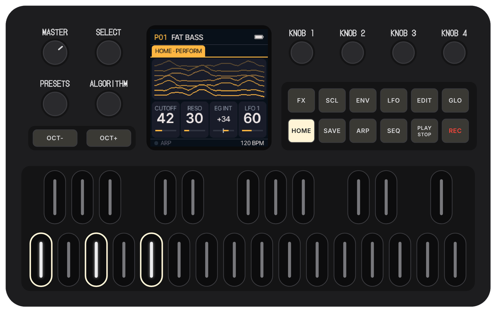
A single voice architecture, explored in depth, with 32 programs.
OSC 1: SAW with an octave-up blend, PULSE with width, TRI with a wavefolder, SINE with cross modulation. OSC 2: SAW, SQR or TRI with RING, SYNC or both, semitone and tune.
LPF24, LPF12, BPF, HPF and MS20, a driven 12 dB low-pass whose resonance screams. A FOLD stage before it, key tracking and its own envelope.
FILTER EG and AMP EG; two LFOs (SAW, SQR, TRI, SIN, S&H) with key sync and tempo sync. Four patch cords route any of them to pitch, cutoff, amp and more.
POLY, MONO, LEGATO and UNISON: four voices, or eight detuned oscillators in unison. DETUNE, PORTA, EG RESET and SPREAD across the stereo field.
Six arp types over 1–4 octaves with latch, swing and steps on/off; a 16-step sequencer with notes, ties, accents and slides, saved with the program.
MOD FX (chorus, flanger, ensemble, phaser, or METAL distortion), a stereo delay in time with the tempo and a reverb, in three orders.
Each page draws its shape from the values: the waves, the filter's curve, the envelopes, the LFOs running. HOME draws the sound playing: RIDGE, RING or ORBIT.
Sixteen factory sounds (FAT BASS, ACID LINE, SYNC PAD, 80S BRASS, SOFT BELLS, S&H TEXTURE…) and sixteen free slots. MIDI Program Change picks them.
NIGHT, CRT, PAPER and NEON. And a three-second power-on with the eighties' stripes.
Real screens of Golana 1.0, taken from the emulator.
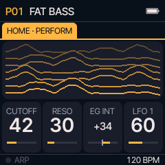
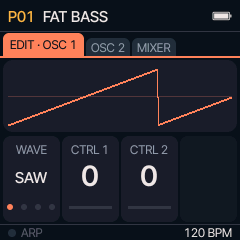
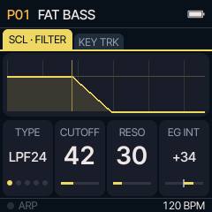
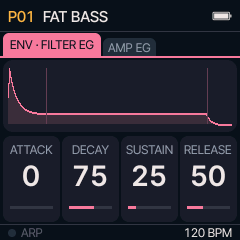
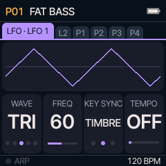
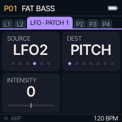
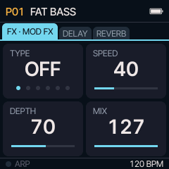
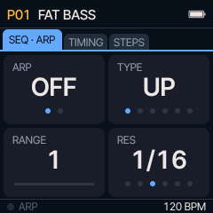
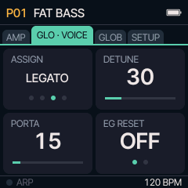
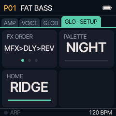
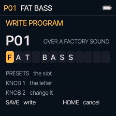
Custom firmware should never be a one-way door.
Chrome or Edge, a USB data cable, two minutes. The installer checks the package before writing and asks the FM-1 what it runs afterwards. An interrupted install resumes.
Hold OCT− while switching on (or let two starts fail) and the FM-1 starts a small rescue mode with only USB, ready for a new install. The boot code itself is never written.
The installer can put M-VAVE's official V15 firmware back at any time, after saving your music to a file.
Try it first in the browser, no FM-1 needed, or install it now.